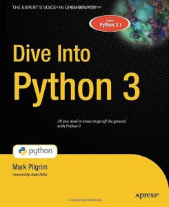

You are here: •
Dive Into Python 3 covers Python 3 and its differences from Python 2. Compared to Dive Into Python, it’s about 20% revised and 80% new material. The book is now complete, but feedback is always welcome.
Also available on dead trees!

chardet to Python 3
2to3
The book is freely licensed under the Creative Commons Attribution Share-Alike license. You can download it as HTML or PDF. Über-geeks can also clone the Git repository:
you@localhost:~$ git clone git://github.com/diveintomark/diveintopython3.git
© 2001–11 Mark Pilgrim
Translations: en español, in italiano, на русском языке, به پارسی, česky